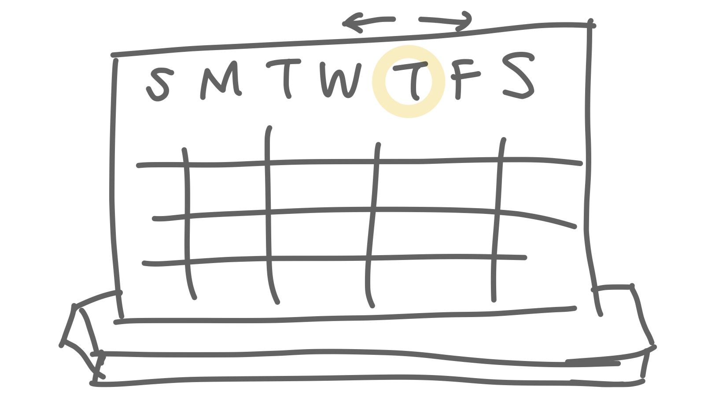
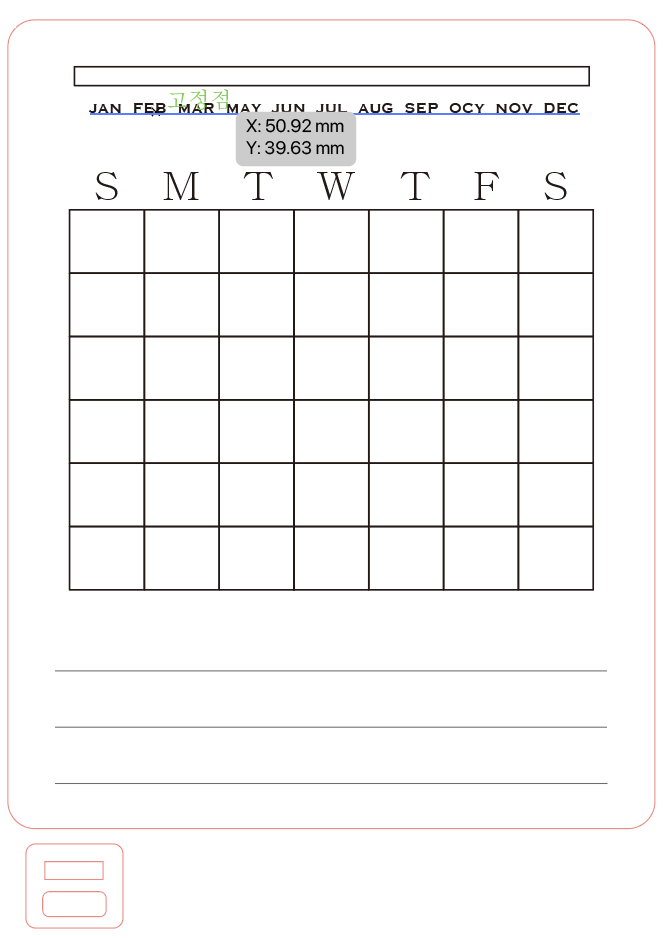

プロトタイプ



説明
アクリルなので、マーカーペンなどでメモしたり消したりできるカレンダー
月別で自分のスケジュールをざっくりチェックやメモできるカレンダー。
月毎に重要な点などをメモできるように下にメモ欄がある。
おすすめ使い方として、家計簿として使ったり、毎日貯金したお金をチェックしたりすること。
難しかった点
月パーツを固定することがうまくできず、ちょっとだけのMMの間違いで穴に入れなかったりして、作業が進めなかった。
レーザーカッターを使ってパーツを作ることができなかったため、任意で残ったパーツで固定して、完成させた。